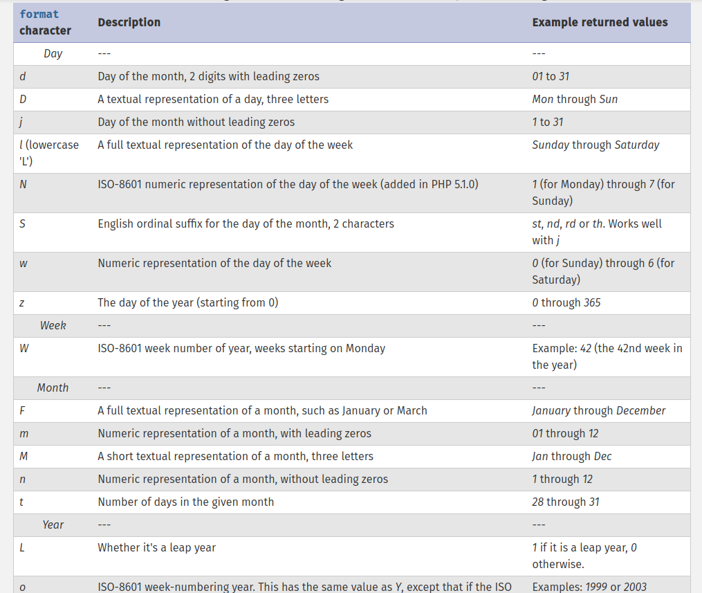
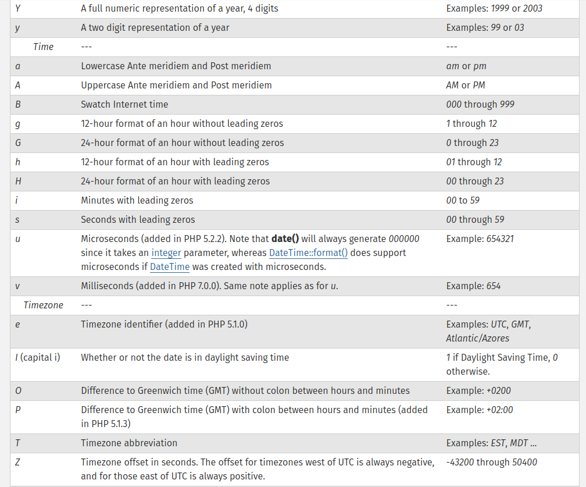

The date() function is used to return a formatted date string.
Below are the parameter used to return some strings.
date("d") // 09
It can also take seconds (2nd parameter) and format them according to the given string (1st parameter).
date("Y-m-d", time()) // 2019-01-09
date_default_timezone_set() sets the default timezone used.

